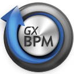

GeneXus Business Process Modeler is a free tool for modeling a Business Process. It is based on the BPMN 2.0 modeling standard and it’s oriented at users with a business process analyst profile.
It is part of the Business Process Management methodology.
It is useful in the initial stage of a project where analysts of functions and processes participate due to their knowledge of the organization’s business. However, it is not a requirement for them to have a technical profile. They require a tool for capitalizing that knowledge and for documenting and formalizing it so that it may be automated later. If you are getting started on your project and would like to start modeling your business processes see Getting Started: Modeling a business process.
It is also useful to make changes on business processes that are in production. These changes may modify its business rules, and process flow, among other things. If the project is already implemented, or if it’s already in production and you want to make changes to the processes, go to Getting Started: Modifying a business process.
GeneXus Business Process Modeler: Scenarios for use